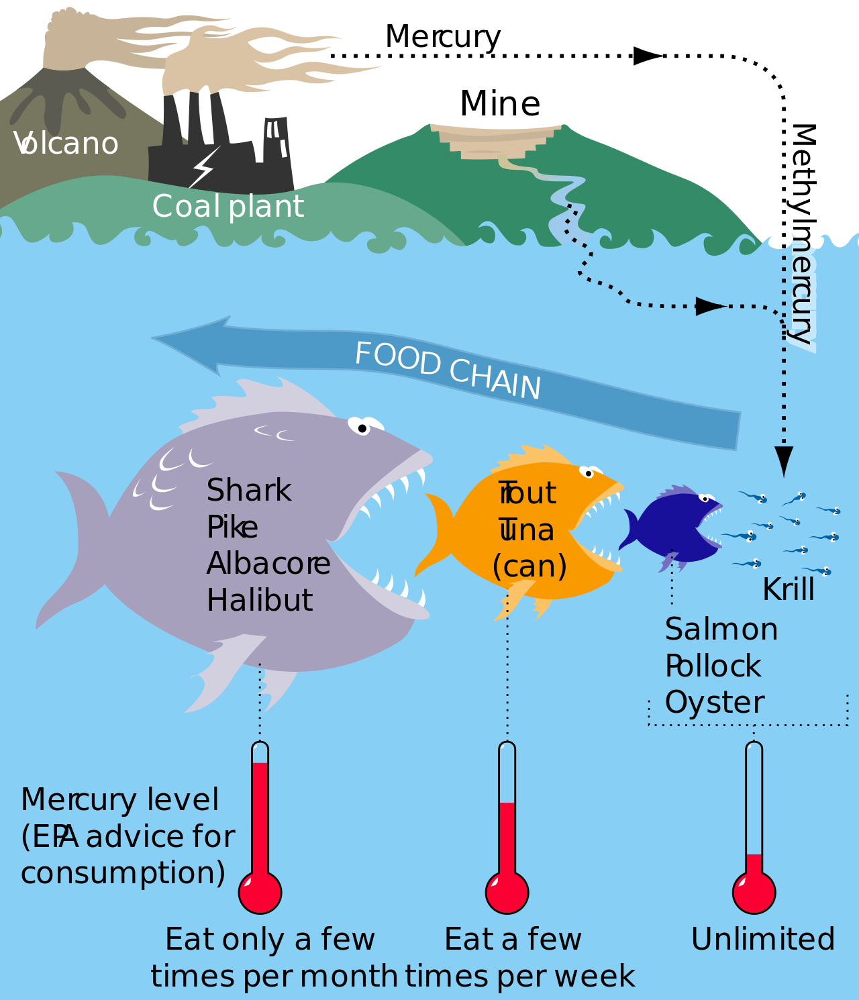

Diagnosis Mercury: Money, Politics, and Poison
Overview
Our first Science & Authority case study explores the discovery of widespread mercury poisoning from fish consumption and the subsequent struggle to raise awareness about its health effects. Our primary source is the book Diagnosis: Mercury: Money, Politics and Poison by Jane Marie Hightower, M.D. [SWEM Online]. Dr. Hightower, a physician, discovered that many of her patients who were avid fish consumers had elevated mercury levels and various nonspecific symptoms like fatigue, memory problems, and gastrointestinal issues. The book underscores the importance of (1) independent research and investigation, particularly in the face of industry influence on public health issues, and (2) clear and accessible information for both healthcare providers and the public.
Assignment
- Do one of the following.
- Read pp. 46-50 of The Misinformation Age: How False Beliefs Spread by Cailin O'Connor and James Owen Weatherall (see Calendar for PDF).
- Listen to this Podcast reviewing Diagnosis: Mercury: Money, Politics and Poison by Jane Marie Hightower, M.D. [SWEM Online] (This not-so-deepfake podcast was recreated using NotebookLM sourcing PDFs of several chapters of Hightower's book.)
- Watch the video Diagnosis of Methylmercury Poissoning from Seafood Consumption.
Prepare for Discussion
Considier these questions inspired by Diagnosis: Mercury
- Dr. Hightower points out the significant discrepancy between the EPA's recommended safe level of mercury in blood (5 mcg/l) and the California Department of Public Health's claim that a level up to 200 mcg/l is acceptable. What factors could account for such a large difference in these agencies' assessments of safe mercury levels? What are the potential implications of these differing standards for public health?
- Dr. Hightower's research focuses on patients with high fish consumption, a group often excluded from large-scale public health studies. What are the limitations of relying solely on large-scale studies that may not adequately capture the experiences of specific subpopulations? How can researchers ensure that these groups are not overlooked in studies on environmental health risks?
- The sources describe the historical use of mercury in various medical treatments despite its known toxicity, raising questions about the slow pace of change in medical practices. What factors contribute to the medical community's reluctance to abandon established treatments, even when evidence suggests potential harm? How can we encourage a more proactive approach to reevaluating and updating medical practices based on emerging scientific evidence?
- The sources highlight the influence of industry lobbying groups, like EPRI, on mercury research, raising concerns about the objectivity of some scientific studies. How can we ensure transparency and minimize potential biases in scientific research, especially when it involves industries that may be impacted by the findings? What is the role of public awareness and scrutiny in holding both researchers and funding bodies accountable for ethical and unbiased research practices?
- Despite readily available information on the risks of mercury in fish, many individuals, including medical professionals, remain unaware of the potential dangers. What are the most effective strategies for communicating complex scientific information about environmental health risks to the public and healthcare providers? How can we overcome barriers to information access and promote informed decision-making about food choices and health?
Look through this infographic and the timelines that follow

The table above is from Grandjean et al. (2011). The table below is from Hightower, the author of Diagnosis: Mercury.
Further Watching
The Difference Between Albacore Tuna and Chunk Light Tuna
Who do you think funded the production of the following video?
Further Reading
20/20: Health Risks of Mercury in Fish - ABC News
Bocking, S. (2009). Skewing Science. Alternatives Journal, 35(3), 8. [Readings]
Cherney, K. (2017). Understanding Mercury Poisoning. Healthline.
Johnson, J. (2018). Mercury Poisoning: Symptoms and Early Signs. Medical News Today.
World Health Organization. (2008). Mercury: assessing the environmental burden of disease at national and local levels. Poulin, J.
Bender, M., Lymberidi-Settimo, E. & Groth III, E. New mercury treaty exposes health risks. J Public Health Pol 35, 1–13 (2014).
Ke, T., Tinkov, A. A., Skalny, A. V., Bowman, A. B., Rocha, J. B., Santamaria, A., & Aschner, M. (2021). Developmental exposure to methylmercury and ADHD, a literature review of epigenetic studies. Environmental Epigenetics, 7(1), dvab014. [PDF]
Ascher, M. (2011). Risk assessment of methyl mercury and its effects on neurodevelopment - In: Developmental Neurotoxicology Research. In: Wang, C., & Slikker Jr, W. (Eds.). Developmental Neurotoxicology Research: Principles, Models, Techniques, Strategies, and Mechanisms. John Wiley & Sons.
Grandjean, P., Choi, A., Weihe, P., Murata, K. (2011) Methylmercury neurotoxicology: From rare poisonings to silent pandemic. In: Wang, C., & Slikker Jr, W. (Eds.). Developmental Neurotoxicology Research: Principles, Models, Techniques, Strategies, and Mechanisms. John Wiley & Sons.
1998 Mercury Study Report to Congress [4-page Overview of Executive Summary]
US Food and Drug Administration Home / Food / Chemical Contaminants, Metals & Pesticides in Food Metals and Your Food / Mercury and Methylmercury
Institute of Medicine (US) Forum on Drug Discovery, Development, and Translation. Challenges for the FDA: The Future of Drug Safety, Workshop Summary. Washington (DC): National Academies Press (US); 2007.
Davis, D. L. (2007). The Secret History of the War on Cancer. Hachette UK.
McGarity, T. O., & Wagner, W. E. (2010). Bending science: How special interests corrupt public health research. Harvard University Press.
Michaels, D. (2008). Doubt is their product: how industry's assault on science threatens your health. Oxford University Press.